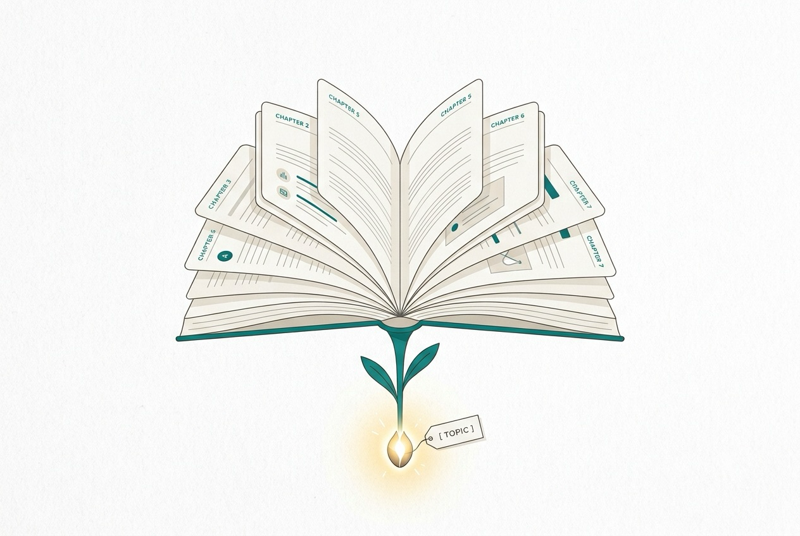

A BookBank Field Guide · About BookBank Itself
BookBank
Turn a topic — and a voice you choose —
into a beautiful, self-contained book.

A clean, minimal editorial illustration on a bright off-white paper background: a single glowing seed or spark labelled with a small tag, sprouting upward into an open book whose two pages fan out into neat little chapter cards. Flat vector style, generous whitespace, thin confident linework, one calm teal accent (#0f766e) plus soft warm neutrals, no dark background, no legible body text baked in. The mood is "a topic grows into a book". ~1200x800px, 3:2 landscape; keep the book centred with safe margins, it is letterboxed into a 3:2 box.
Generate with your image agent, then drop the file here.
Told in the voice of The Clear Mentor — a patient senior engineer, example-first.
“A book is just a topic you cared about, explained well, in a voice you chose.”
Grounded in the BookBank plugin (sunprema/kit) and the public library at sunprema.github.io/books.
The Path
What you’ll be able to do
Eight short chapters. We start with what BookBank actually is (and isn’t), take apart a book folder, learn to pick a persona voice and a theme look, write a prompt that yields a great book, file a book-request issue, and follow one request all the way to a live shelf. By the end you can make a book of your own.
- What BookBank IsThe mental model
- The Anatomy of a BookFiles on disk
- PersonasChoosing a voice
- ThemesChoosing a look
- Writing a Good PromptPrompts to steal
- Requesting a Book by IssueThe request form
- From Request to ShelfThe full lifecycle
- Make It YoursRecipes & gotchas
- CheatsheetEverything, one page